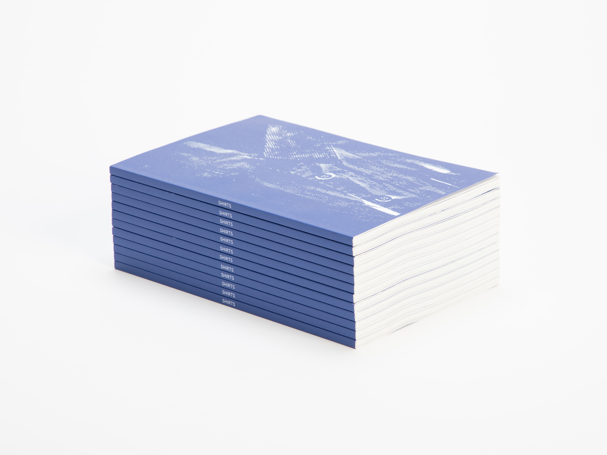

SHIRTS.VOL01
統合デザイン学科卒業・修了制作展2024の協賛企業7社と様々な進路に進んだ卒業生にインタビュー。企画や企業とのアポ、デザインの全てを制作班6名で行いました。学生目線で聞くことに価値を置き、これから就活が始まる学生に向けて自分たちが本当に知りたいことを記録。見開きA4サイズ、全74ページ。 シャツにはいろんな種類があるように私たちの目の前には、たくさんの進路が存在しています。本誌では、就活を終えたばかりの学生の声から現場で活躍されている企業の方々の声まで、就活を多様な視点で1つの冊子にまとめました。私たちが自分に似合うシャツを見つけるために。 AD,D,P : Nozomi Terashima D,P : Haruto Nozawa, Hana Masaki Ed : Arata Nakagawa, Satoka Narikawa, Sayaka Fujino Special Thanks : Kazuki Himata, Mirano Nishi, Riho Goto CL: Tama Art University Integrated Design Graduation Show 2O24
